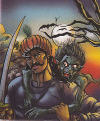

21. The Farmer's Dream
In this story, there was a farmer named Lakhidas who lived in a village. One night, he had a vivid dream about a hidden treasure buried under a particular tree in a distant town. Convinced that the dream was a divine revelation, Lakhidas set out on a journey to find the treasure.
After traveling for days, Lakhidas reached the town mentioned in his dream. Under the tree described in his dream, he started digging. To his amazement, he found a pot filled with gold coins buried exactly where his dream had indicated.
|
Overjoyed, Lakhidas decided to stay in the town for the night. He went to an inn, and in his excitement, he shared his story with the innkeeper. The innkeeper was a cunning man. He wanted the treasure for himself, so he waited for Lakhidas to fall asleep and stole the pot of gold coins.
When Lakhidas woke up and discovered his loss, he was devastated. He decided to seek justice and went to the king's court to file a complaint against the innkeeper.
|

|
The king, a wise and just ruler, listened to both sides of the story carefully. After considering the evidence and hearing the arguments, he realized that Lakhidas was telling the truth. The king ordered his soldiers to retrieve the stolen gold coins from the innkeeper and return them to Lakhidas.

|
Betal, who had been listening to this tale, asked King Vikramaditya a question related to the story. Despite knowing the answer, Vikramaditya remained silent, determined to carry Betal to the sage without uttering a word.
And thus, the cycle of stories continued, with King Vikramaditya's determination being tested by Betal's tricky questions.
|